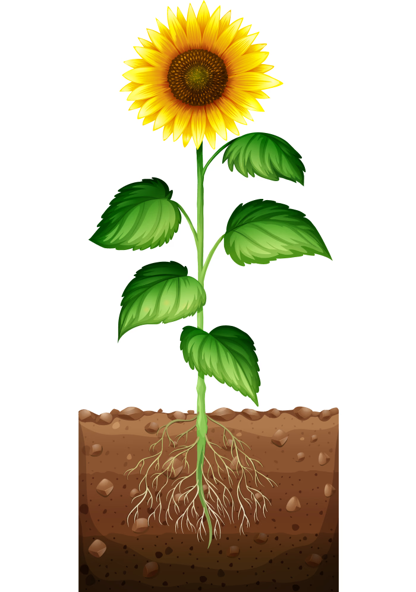
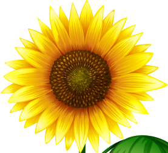
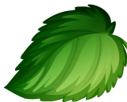
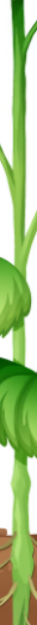
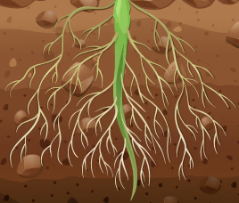
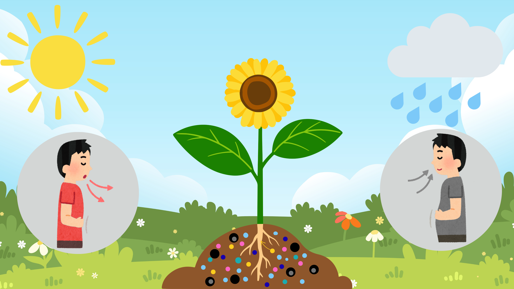
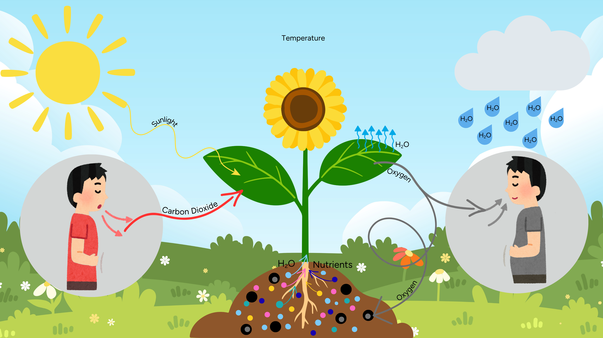

What do plants need to survive?
Plants are living organisms found growing all around the world. Animals rely on plants for food, nutrients and the oxygen they produce.
📄
Download worksheet
Your mission
Become a botanist
In this lesson, you will be a plant detective. You will investigate why plants become unhealthy and work out how to make them healthy again.
Learning objective
Identify the physical conditions that affect a plant’s ability to grow and survive.
Success criteria
- I can identify the physical conditions that a plant needs to grow and survive.
- I can compare healthy and unhealthy plants to explain why plants need the correct physical conditions to be healthy
Think like a scientist
See, Think, Wonder
Botanists observe how plants grow and behave. They use a thinking routine called See, Think, Wonder to make scientific observations.
Making observations of plants
Watch the video of a seed germinating, add your observations, and then select Next to continue.
See
What do you notice?
Think
What do you think is happening?
Wonder
What questions do you have?
Completed — next activity unlocked.
The structure of a flowering plant
Watching time lapse videos of plants helps us to observe the behaviour of plants. As a botanist you want to be sure you use the correct terms when talking about plants. To remind yourself of the major parts of a flowering plant complete this drag and drop activity.

Beautiful! Your plant is complete!




Well done! All labels are correct! 🎉
Completed — next activity unlocked.
Think like a scientist - Brainstorm to share ideas
Botanists like to collaborate and share ideas with one another when they are investigating plants. One way to do this is to brainstorm to think of new ideas. In this activity you can work on your own or in a team to brainstorm ideas to explore the question, what are the physical conditions that plants require to grow and survive. Come up with as many ideas as you can. You can use the picture to help you think of ideas and write them on the sticky notes activity below.

Completed — next activity unlocked.
Why do plants need the right physical conditions to survive?
Some of the physical conditions that plants need to grow include sunlight, soil, water, carbon dioxide, oxygen, nutrients, and temperature. Use the diagram and interactive video to investigate why they need these physical conditions. You will also explore the function of different parts of the plant.

Plant Science
Drag the correct words into the blanks to complete each sentence.
Word Bank
Completed — next activity unlocked.
Can you solve the mystery of the unhealthy plants?
Botanists, farmers, nursery workers and gardeners often need to be plant detectives to solve the mystery of unhealthy plants. They think about the physical conditions that plants need to be healthy and how too much or too little of each physical condition can cause a plant to become unhealthy. Use your detective skills to make observations and come up with an idea for what each plant might need to become healthy again. Test your idea and see if you can solve the mystery for each unhealthy plant.
Completed — next activity unlocked.